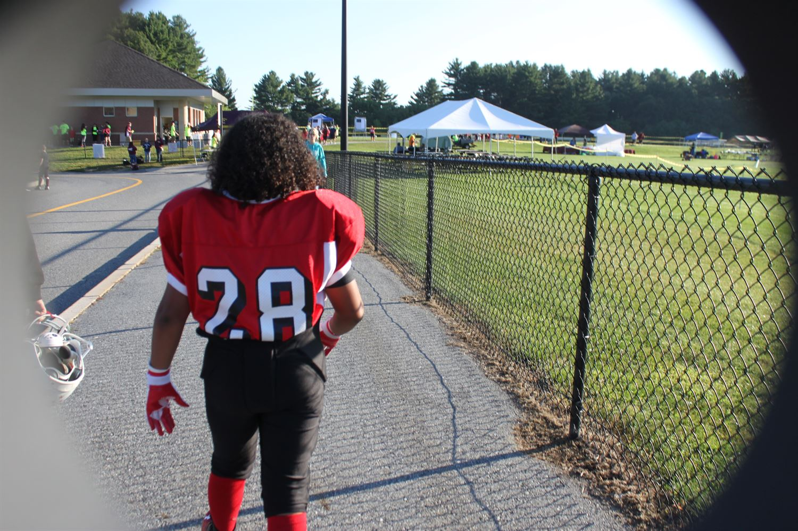

HELLO ALL! This is my biography for Katie's HMTL and Java Script class. In this part, I am going to be talking a little bit about myself and how my life has been going. Recently, all I really have been doing is trying to get work done for school and find myself a job. I have not had a job since before I started school and it has became hard to find one to replace! I have an app on my phone called Indeed that helps search for open jobs as well. Once I get a job and a steady income pay, I would feel a lot better than I do about my situation. Some other things I have been working on in the meantime are going to the gym and keeping myself in shape. Ever since High school football ended for me, I have not really ben getting as much physical activity as I was. To fix that, I have started to go to the school gym to keep my body in the best shape I can. I have also been assessing my time management with myself and set a plan for certain things that need to be done.
These were the past three schools I have attended including NEIT! :]
For Middle School, I attended Stacy Middle School in Milford MA for four years, fifth, sixth, seventh, and eigth This school was okay but I did not like how they ran it and some of the rules we HAD to abide by.
For High School, I attended Milford High School in Milford MA as well. I attended this school for all four years of High School. At first, school was not bad, I actually quite liked it. Progressively as I got older in that building, I started to realize how bad they were treating us. The staff were very disrespectful and would not treat us like how they are supposed to which got on my nerves a lot. I eventually got through all the BS and finished out all four.
For College, I have started to attend the New England Institute of Technology. This school has treated me very well for the time i've been here and always have plenty of immenities for everyone to fit in. This school peaked my interest because I read that we do excellerated programs and you actually get your degree faster. Also, They are hands on with the work that you do so you get to learn a lot by actually doing it.
I Have lots and lots of hobbies but the most prominant ones as of right now are these!
My First Hobbie Is playing sports. I grew up in a very active household so ive grown up to love playing sports! I have played almost every sport you can name, and enjoyed every single one of them differently. Each game has theit own prespective and enjoyment that comes with it.
My Second Hobby is Playing video games. Ever since I was a kid and I got introduced to video games, I have been hooked. Video games are so fun and interesting to me because you can really see and play with another characters prespective and control them how you want, etc. There is so much that goes into gaming and I love every aspect of it.
My Third Hobby to do on my free time is working out in the gym. Since I started lifting in freshman year, I have nit stopped because I have seen such a difference it has made to me. Also, I use the gym as a relaxation and a time to think.